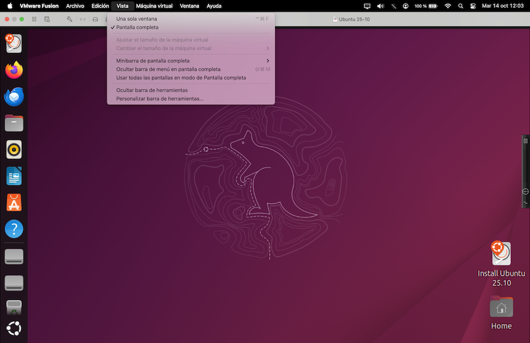
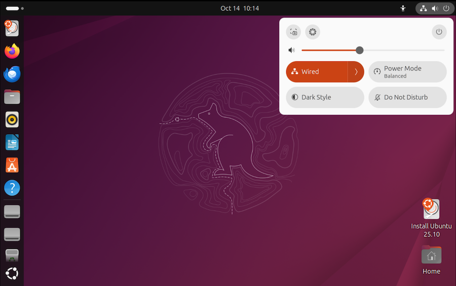
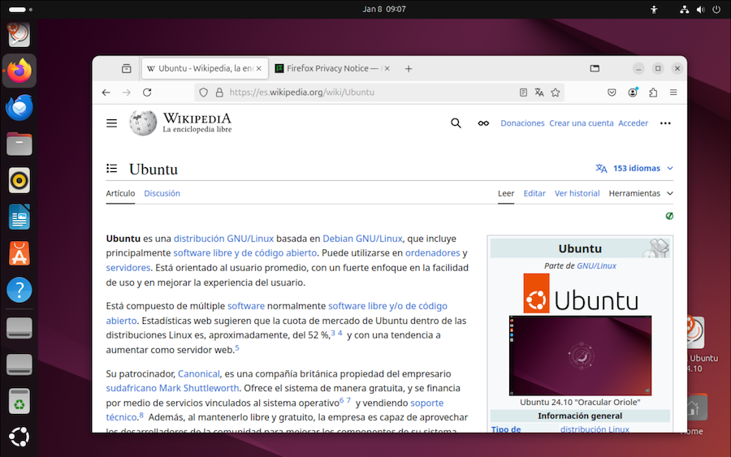
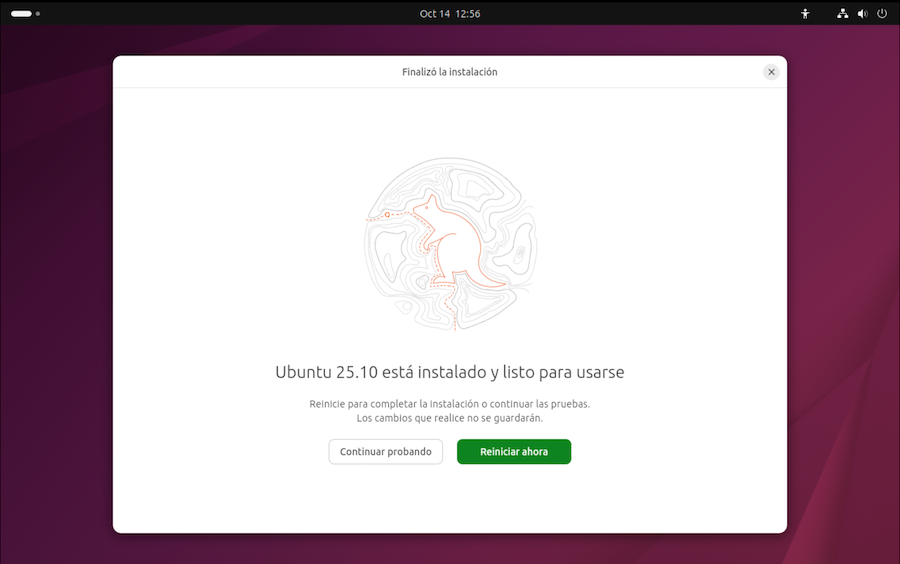
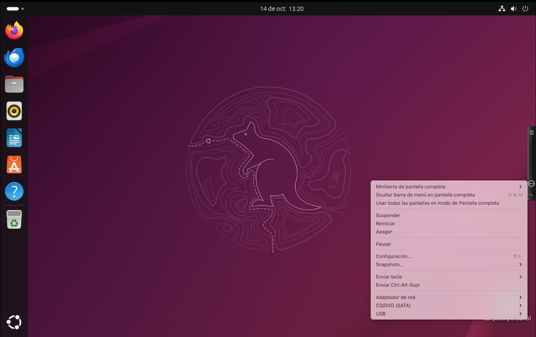

Instalar Ubuntu¶
Crear máquina virtual¶
Una vez descargado el disco de instalación de Ubuntu en forma de archivo ISO (DVD virtual), iniciamos VMWare y pulsamos en el menú Archivo > Nuevo. Al iniciarse el proceso, se mostrará la siguiente ventana:
Pulsamos en Crear máquina personalizada. Seleccionamos el sistema operativo, Ubuntu para arquitecturas ARM de 64 bits:

El siguiente paso es crear el archivo que va a servir de disco duro virtual. En principio se reserva un número de gigas sugerido por VMware, que podemos configurar más adelante.

Si pulsamos en "Personalizar configuración", podemos asignar un nombre y carpeta al disco duro virtual:
Configurar la máquina virtual¶
Además de la configuración general de VMWare, cada máquina virtual tiene la suya propia. Antes de instalar el sistema operativo, abrimos la biblioteca de máquinas virtuales (menú de VMware, Opción "Ventana > Biblioteca de máquinas virtuales"), seleccionamos la máquina recién creada, y pulsamos en el menú Máquina Virtual > Configuración. Se muestra la siguiente ventana con las opciones de configuración:

Veamos algunas opciones:
-
En el apartado CD/DVD, marcar "Conectar DVD" y seleccionar el archivo que hemos descargado de la página de Ubuntu. Será considerado como DVD virtual.

Para volver a visualizar todas las opciones de configuración, pulsar en el botón Mostrar todo en la barra superior de la ventana.
-
En el apartado General podemos cambiar el nombre de la máquina y tipo de sistema operativo. También podemos configurar esta máquina virtual como aquella que se pone en marcha por defecto al arrancar VMWare. De todas formas, hasta que no esté instalada, conviene demorar esto.
-
En el apartado Compartir establecemos las carpetas de la máquina física a las que tendremos acceso desde la virtual.
-
El apartado Procesador y Memoria permite asignar más memoria RAM a la máquina virtual, que se restará de la utilizada por la máquina física. El rendimiento de cada máquina se verá afectado por la cantidad de memoria asignada. Consultar los requerimientos del sistema operativo descargado.
-
En el apartado adaptador de red, comprobar que tenemos Internet activado.
-
El apartado del disco duro permite asignar más gigas al disco virtual.
-
En el apartado avanzado conviene activar el control del estado de la batería.
-
En el apartado pantalla podemos activar los gráficos 3D y establecer la cantidad de memoria asignada a la pantalla.
-
En el apartado disco de arranque podemos indicar el dispositivo al que acude la máquina virtual para cargar el sistema operativo. Típicamente suele ser el disco duro, pero durante la instalación necesitamos que vaya al DVD.
-
En el apartado aislamiento comprobar que tenemos activado el uso de copiar y pegar de una máquina a la otra.
Conexi√≥n a Internet¶
Tratándose de una máquina virtual, la conexión a Internet, redes wifi, etc, queda resuelta en la máquina física. Todo lo que tenemos que hacer es asegurarnos de que hay una conexión activa en la máquina Host.
Supongamos, por ejemplo, que queremos buscar una red wifi. Lo haremos en la máquina física y la virtual se beneficiará de ello. En principio, todo se resuelve automáticamente.
Pero si tenemos problemas, VMWare puede proporcionar otras alternativas, que podemos ajustar en la configuración de la máquina virtual, apartado adaptador de red.
Espacio en el disco duro¶
En la máquina física se creará un enorme archivo como disco virtual, donde encerraremos toda la estructura de carpetas de la máquina virtual, pero también tenemos la opción de compartir determinadas carpetas de la máquina física, que en la máquina virtual se verán como si fueran dispositivos externos.
Para guardar documentos podemos utilizar una o varias carpetas compartidas, de forma que si desinstalamos la máquina virtual y todo su software, no perdamos esos archivos. Por este motivo, al configurar el disco virtual, no es necesario dedicarle un tamaño excesivo. Basta con lo necesario para instalar el software de la máquina virtual.
Iniciar la máquina virtual¶
El primer paso es asegurarnos de que el DVD virtual de instalación de Ubuntu está siendo detectado por la máquina virtual. Para ello accedemos a la configuración, apartado CD/DVD, y nos aseguramos de ello, como vimos en el apartado anterior.
Al iniciar la máquina virtual se intentará cargar el sistema operativo a partir del disco duro virtual. Pâra el proceso de instalación tenemos que cambiar esto y asegurarnos de que el disco de arranque es el DVD. Acudimos a la configuración de la máquina virtual, apartado Disco de Arranque, y seleccionamos el DVD.
Ahora ya podemos poner en marcha la máquina virtual. Acudimos a la ventana de biblioteca de máquinas virtuales, seleccionamos la que hemos creado y pulsamos en el menú de VMWare "Máquina Virtual > Arrancar". El sistema acude al DVD virtual, busca el programa gestor de arranque, y lo ejecuta.
En muchos sistemas operativos, el gestor de arranque es un software que se ejecuta sin mostrar nada en pantalla. Carga en la memoria RAM el sistema operativo, un proceso que dura unos segundos, y durante el cual veremos la pantalla en negro. En el caso de Ubuntu, el programa cargador es uno llamado GRUB.
Tratándose del DVD de instalación, GRUB viene configurado para mostrar un menú de arranque:

Como todavía no hemos iniciado Linux, este menú resulta bastante primitivo. Se ejecuta en forma de consola de texto, sin elementos gráficos, y aquí no funciona el ratón. Hay que usar las teclas de flechas Up Down para seleccionar una opción y, a continuación, pulsar Enter para ejecutarla.
Ratón bloqueado
Cuando la ventana de VMWare es la que tiene el foco, se apropia del teclado y ratón, como sucede con todas las ventanas. Pero como aquí no funciona el ratón, no podremos pulsarlo fuera de la ventana, quedando el puntero atrapado y oculto. Para liberarlo, VMWare tiene una combinación de teclas especial. En mi caso, siendo la máquina física un Mac, se trata de las teclas Ctrl+Cmd. Podemos comprobarlo en la configuración general de VMWare, apartado "teclado y ratón".
En este menú de arranque, seleccionamos la primera opción, "Try or Install Ubuntu y pulsamos Enter. Se carga el sistema operativo desde el DVD virtual. Tras un cierto período de tiempo, se completa la carga y se muestra el escritorio de Gnome y una ventana de selección de idioma:
Vamos pulsando en el botón [Siguiente] y aceptando la configuración por defecto. En lo referido a Internet, se nos sugiere como "conexión por cable". En realidad se trata de la conexión simulada por la máquina virtual, que se beneficia de lo que tengamos en la máquina física, wifi, cable, o lo que sea.
En uno de los pasos se nos da la opción de completar la instalación de Ubuntu en el disco duro virtual o explorarlo un poco antes de instalar nada. Vamos a optar por esta segunda opción, "probar Ubuntu":

Por ahora tenemos un disco virtual vacío, y un sistema operativo cargado desde el DVD virtual. A esto se le llama una sesión "Live".
El aspecto de Ubuntu
Curiosamente, hay algo que siempre ha provocado cierta controversia acerca de Ubuntu: su esquema de colores tan chillón. Esos temas rojizos provocan una mezcla de amor y odio...
Pero como veremos más adelante, si no nos gusta podremos configurarlo. Paciencia.
Visualizaci√≥n¶
El menú "Vista" de VMware nos permite seleccionar entre:
- ver la máquina virtual en una ventana (single Window)
- hacer que ocupe toda la pantalla (full screen)
En cualquiera de las dos opciones, la resolución de la máquina virtual se configura automáticamente. Si tenemos problemas con esto, tenemos dos opciones:
-
Acudir a la configuración de VMware, según vimos anteriormente, y hacer ajustes en el apartado Pantalla. La opción "ajustar máquina virtual a la pantalla" significa que los contenidos se verán más grandes o más pequeños, pero sin modificar la resolución de la máquina virtual. La opción "cambiar tamaño", por el contrario, modifica la resolución en la máquina virtual cada vez que se modifica el tamaño de la ventana o pasamos a pantalla completa.
-
En el escritorio virtual, acudir a la configuración de Ubuntu siguiendo el procedimiento que se describe más adelante. Entrar en el apartado "Displays", seleccionar otra resolución y activarla pulsando en el botón
[Apply]
Cuando la máquina virtual ocupa toda la pantalla, dejaremos de ver el menú de VMWare. No hay problema. Basta con acercar el ratón al borde superior de la pantalla, y aparecerá el menú.
Explorando Gnome¶
El escritorio de Ubuntu es una versión "tuneada" de Gnome. Incorpora una barra lateral (el Dock) con iconos de las aplicaciones favoritas. En la esquina inferior izquierda tenemos un icono con el logo de Ubuntu:

Pulsando ahí, se despliega una lista de aplicaciones (la "parrilla", o grid), con una caja de búsqueda por texto:

Si hay más iconos que espacio disponible, se agrupan en páginas. En la parte inferior de la parrilla tenemos unos puntos que se pueden pulsar para seleccionar la página siguiente o la anterior. También podemos pasar de página pulsando en los iconos < > en los márgenes izquierdo o derecho.
En la esquina superior derecha del escritorio tenemos unos iconos de estado. Pulsando ahí, se despliega un menú de sistema que nos da acceso a dos iconos interesantes:
- El de la rueda dentada nos da acceso a la configuración de Ubuntu
- El icono de apagar nos permite finalizar la sesión

Dependiendo de la configuración de la máquina (en mi caso, una virtual), podemos ver más iconos en este menú:
- bloquear pantalla
- capturar imagen de la pantalla
- control de sonido
- estado de red
- control de energía / estado de batería
- seleccionar modo claro/oscuro
- bluetooth, wifi
- etc.
La ejecución de programas se puede hacer pulsando en la barra del Dock, o desplegando la parrilla de aplicaciones. Vamos a probar a pulsar en el icono de Firefox, el navegador web, lo que nos permitirá comprobar nuestra conexión a internet:

El menú de Gnome¶
Las ventanas en el escritorio de Ubuntu suelen tener los tres iconos habituales en la esquina superior derecha; minimizar, maximizar/restaurar y cerrar ventana:
_ □ ✕
Muchas aplicaciones Linux suelen mostrar la típica barra de menús en la barra superior de la ventana. En algunas aplicaciones, particularmente en las utilidades Gnome, el menú se suele sustituir por un icono habitual en las tablets o teléfonos móviles:
☰
También se suelen mostrar otros iconos que muestran menús desplegables, dependiendo de la aplicación en cuestión.
Teclado¶
Antes de instalar nada, conviene dejar resueltos los posibles conflictos entre "atajos de teclado" de ambas máquinas, la física y la virtual, aunque esto se puede dejar para más adelante.
En el menú de VMware, seleccionamos Ajustes > Keyboard:

Proceso de instalaci√≥n¶
Tras explorar un poco el funcionamiento del escritorio de Ubuntu, vamos a instalar el sistema operativo en el disco duro virtual. Antes de empezar el proceso, debemos asegurarnos de que tenemos el ordenador conectado a la red eléctrica y a Internet. Esto último es especialmente importante, porque permitirá detectar la conexión de red, configurarla automáticamente, y descargar contenidos no incluidos en el DVD virtual.
Reiniciamos la sesión Live desde el DVD de instalación, como vimos anteriormente y optamos por completar la instalación:

Se nos irá guiando paso a paso. A las sucesivas preguntas optamos por:
- Instalación interactiva guiada
- Selección ampliada de software a instalar
- Instalar programas privativos de terceros
- Usar todo el disco duro virtual, borrando su contenido si lo hubiera
- Al cumplimentar los datos de usuario, optamos por acceder sin contraseña, dado que se trata de una máquina virtual, y ya tenemos contraseña para la física (a menos que usemos la virtualización para esconder nuestros documentos secretos)
Finalmente pulsamos en el botón Comenzar la instalación. Durante el proceso, mientras se copia los contenidos del DVD virtual al disco duro, se bajan otros de Internet y se configura el software, se nos irá mostrando información sobre Ubuntu. Paciencia; el proceso dura unos minutos.
Finalmente, se muestra un mensaje "Ubuntu está instalado". Pulsamos en el botón "Reiniciar`:

Antes de reiniciarla, acudimos a la configuración de la máquina virtual, cambiamos la unidad de arranque y establecemos que sea el disco duro.
Tras iniciar sesión de nuevo, esta vez con el sistema instalado en el disco duro virtual, aparece la ventana de bienvenida:
Se establece un diálogo de configuración inicial. Vamos pulsando en el botón [siguiente] hasta completar todos los pasos.
Actualizar software¶
Ubuntu publica actualizaciones de software diariamente, y el DVD de instalación viene con los programas vigentes en el momento del lanzamiento de la versión que hemos instalado. El primer paso ha de ser actualizar ese software.
Desplegamos la parrilla de aplicaciones y, en la caja de búsqueda, introducimos el texto:
actualizaciones
con lo que veremos dos programas:

Seleccionamos el icono azul, Programas Actualizaciones, si queremos configurar la frecuencia de refresco y forma en que se instalan las actualizaciones. Para llevar a cabo la primera actualización, seleccionamos el icono gris, Actualización de software.
Una vez completado el proceso, seguramente se nos pedirá que reiniciemos el sistema.
Configurar¶
A lo largo de este cuaderno tendremos que configurar el sistema Ubuntu para adaptarlo a nuestras necesidades y preferencias. Ubuntu incorpora un programa de utilidad para configurar el escritorio Gnome. Véase página web del proyecto.

Podemos acceder de varias formas:
-
pulsando en el icono de Ubuntu, en el extremo inferior del Dock:
En la lista de aplicaciones, seleccionamos Configuración
-
pulsando en los iconos de estado, en la esquina superior derecha del escritorio. En el menú desplegable, pulsar en el icono de la rueda:
La minibarra¶
Cuando la máquina virtual ocupa toda la pantalla, dejaremos de ver el menú de VMWare. Ya hemos visto como solucionarlo, pero contamos con una alternativa muy interesante, la minibarra.
Consiste en un pequeño gadget, que se muestra en uno de los bordes de la pantalla, y al pulsar sobre el mismo muestra un menú con opciones que habitualmente encontraremos en el menú de VMWare o en su barra de herramientas.
Si la activamos (menú Vista > Minibarra) podemos hacer cosas tales como suspender/apagar la máquina virtual, entrar en la configuración, conectar o expulsar CDs, o simular combinaciones de teclas que son capturadas por el Host y necesitamos pulsar en la máquina Guest.
En la siguiente imagen vemos la minibarra en el borde superior del escritorio. Una de las opciones del menú desplegado es cambiar de sitio la minibarra y llevarla a otro lado de la pantalla:

Podemos configurar la minibarra para que se muestre solo cuando acercamos el ratón.
El disco duro virtual¶
Cada máquina virtual VMWare se materializa en un único archivo en la máquina física, con extensión .vmwarevm, que "empaqueta" todo tipo de contenidos, discos duros, configuración, estado de la máquina, etc. Para examinar ese contenido, en los ordenadores Mac podemos buscar el archivo mencionado y pulsar sobre el mismo mientras mantenemos la tecla Ctrl. Esto despliega un menú emergente. Seleccionamos Mostrar contenido del paquete.
Máquina virtual por defecto¶
Podemos establecer que cuando iniciemos VMWare, arranque determinada máquina virtual sin que tengamos que hacerlo a mano. La seleccionamos, entramos en la configuración de la máquina, y en el apartado General, marcamos la opción Iniciar automáticamente.
Instalar Ubuntu Server¶
Todo lo descrito hasta ahora es válido para la versión Desktop de Ubuntu, concebida para uso doméstico. Sin embargo, no siempre está disponible en versión para arquitecturas ARM, propias del hardware Apple.
Una alternativa de emergencia puede ser instalar Ubuntu Server, que generalmente suele tener versiones para ARM. A primera vista, encontraremos algunas diferencias notables en el proceso de instalación:
-
el programa de instalación de Ubuntu Server es en modo de consola de texto, donde solo funcionan las teclas de flechas Up Down, Tab y Enter, además de la opción de introducir texto en algunas casillas.
-
el software instalado de serie es el necesario para montar un servidor. Para un uso doméstico, tendremos que instalar otros programas a mano, y algunos de los que vienen por defecto, no los utilizaremos en nuestro día a día.
-
una vez hecha la instalación, el modo de trabajo sigue siendo en forma de consola de texto. Tendremos que instalar a mano el programa de escritorio Gnome (o cualquier otro que sea de nuestro gusto).
Veamos los pasos del proceso de instalación, usar la tecla Tab para ir de una casilla a otra, Space para marcar casillas, y Enter para aceptar.
Selección de Idioma:

Selección de teclado. Una vez hecho, ir a [Hecho] con Tab (en la parte inferior de la pantalla) y pulsar Enter

Paquetes a instalar. Ir con Tab a la casilla buscar drivers de terceros y pulsar Space para marcarla. Ir a [Hecho] y pulsar Enter.

Selección de interfaz de comunicaciones y proxy. Lo damos por bueno o dejamos en blanco lo que se nos pida, salvo que queramos configurar la máquina como servidor de red.

Selección de fuente de descargas para la instalación. Se resuelve automáticamente:

Configuración del disco duro virtual. Lo damos por bueno:

Tras completar todas las selecciones, se nos pide crear un nombre de usuario y contraseña. También se pregunta si queremos instalar un paquete de seguridad SSH para acceso a nuestro servidor. Como no es el caso, lo dejamos en blanco.
Selección de paquetes populares en servidores. Lo dejamos en blanco (salvo que nos interese alguno de ellos):

Proceso de instalación en marcha. Al finalizar, seleccionar [Reiniciar ahora] y pulsar Enter.

Una vez reiniciada la máquina, veremos que no hay elementos gráficos. En modo consola de texto aparece lo siguiente:
login:
Introducimos nuestra nombre de usuario y seguidamente se nos pedirá la contraseña. Entramos a una sesión de comandos.
Más adelante veremos con más detalle como funcionan los comandos de Linux. En resumen, se muestra un prompt $ , precedido por información de la sesión. Ese prompt nos invita a introducir el texto de un comando, que se ejecutará al pulsar Enter.
Cada comando ejecuta una tarea, que una vez completada, hace que se recupere el prompt $ para introducir el siguiente comando.
Algunos comandos van mostrando información en la pantalla, a medida que avanzan en su trabajo, y ocasionalmente nos hacen alguna pregunta:
Ok to install software? [Y/n]
En ese caso, tecleamos Y o N. A veces, también hay que pulsar Enter.
El comando para apagar la máquina virtual es:
$ sudo shutdown now
El carácter $ que se muestra en estos comandos no es algo que tenemos que teclear.
La palabra sudo es la abreviatura de super user do, y significa que se trata de un comando que nos va a exigir permisos de administrador. Al ejecutarlo, se nos pedirá contraseña.
Para instalar el escritorio gráfico vamos a utilizar los siguientes comandos:
-
Comenzamos por actualizar la lista de software disponible en los repositorios de Ubuntu:
$ sudo apt updateaptes el programa de instalación de software nuevo. -
No recuerdo muy bien para que hacía falta este comando. Lo descubrí navegando por Internet e instala un programa llamado tasksel. Al parecer, permite la instalación de grupos de paquetes de software en un solo paso.
$ sudo apt install taskselEl comando
apt installes el que se usa para descargar e instalar un paquete del repositorio. -
El tercer paso es instalar el escritorio gráfico. Es un proceso largo que tarda un buen rato en ejecutarse, y llena la pantalla de mensajes:
$ sudo apt install ubuntu-desktop -
Finalizamos reiniciando la máquina:
$ sudo reboot now
Una vez reiniciada, veremos que el proceso de arranque es un poco lento, porque se comprueban muchos servicios de comunicaciones propios de un servidor. Paciencia. Estamos haciendo un apaño al utilizar Ubuntu Server en lugar de la versión Desktop.
Tras completar el arranque, vemos que ya tenemos el escritorio gráfico. Abrimos el terminal de comandos y completamos algunos pasos adicionales:
-
Synaptic es el gestor gráfico para instalar software. Nos ahorra el uso de comandos. Abrir la ventana de Terminal, e instalarlo con:
$ sudo apt install synaptic -
Los dos siguientes paquetes de software sirven para que Ubuntu se entienda con VMware en cosas tales como copiar y pegar de un sistema a otro, o compartir carpetas. Una vez ejecutados, para que tengan efecto habrá que reiniciar la máquina:
$ sudo apt install open-vm-tools $ sudo apt install open-vm-tools-desktop
Finalmente, entramos en la configuración del sistema, y establecemos el idioma y huso horario. Con esto ya tenemos "casi" lo mismo que si hubiéramos instalado la versión Desktop de Ubuntu. Falta instalar nuestros paquetes favoritos, considerando que la selección de software no tiene que ser la misma si comparamos las versiones Desktop y Server